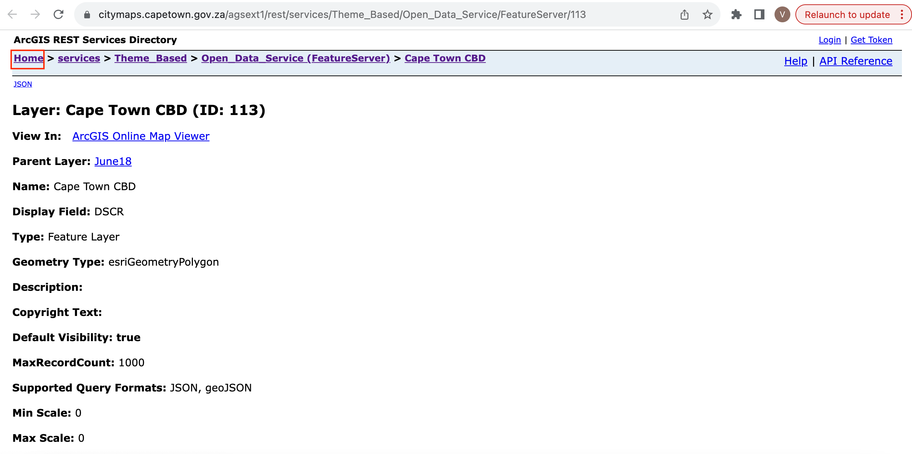
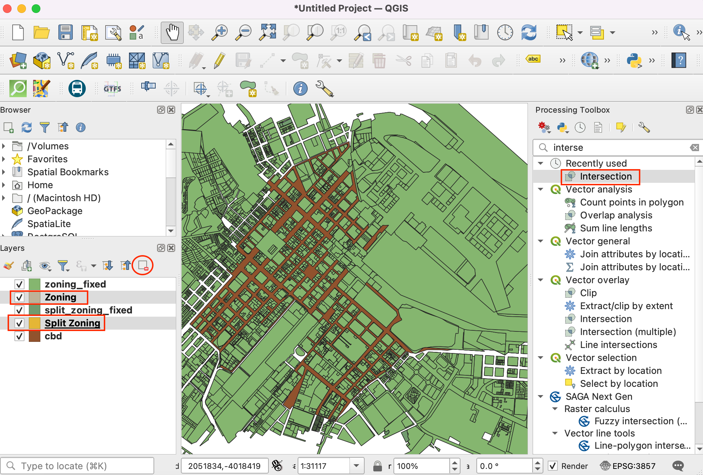
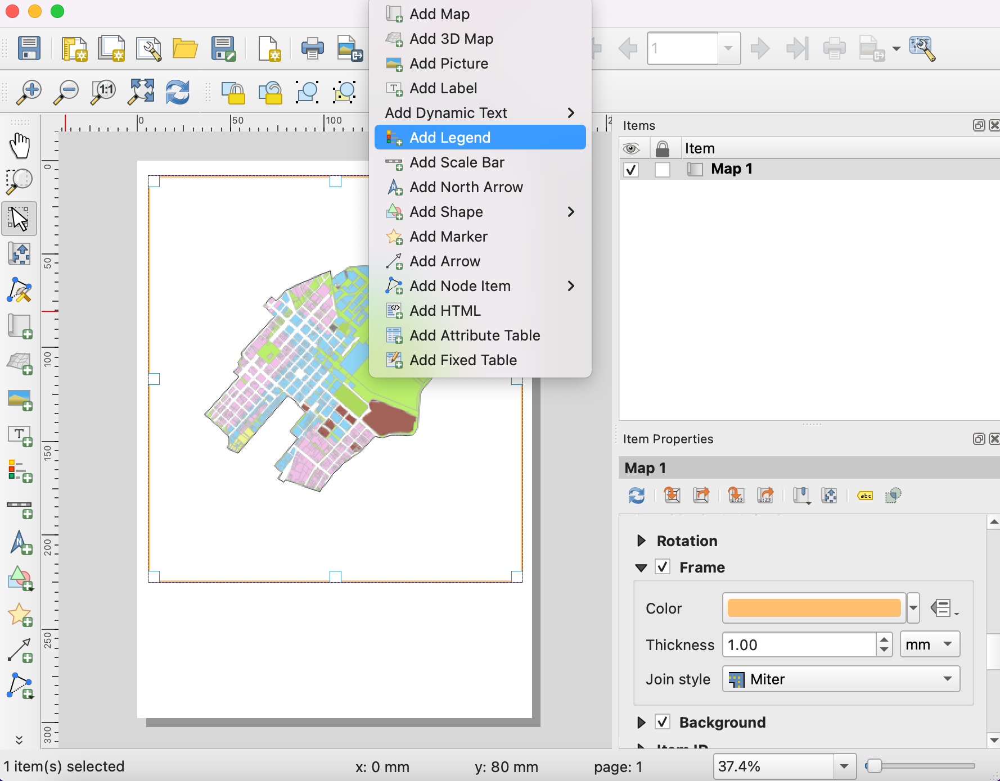
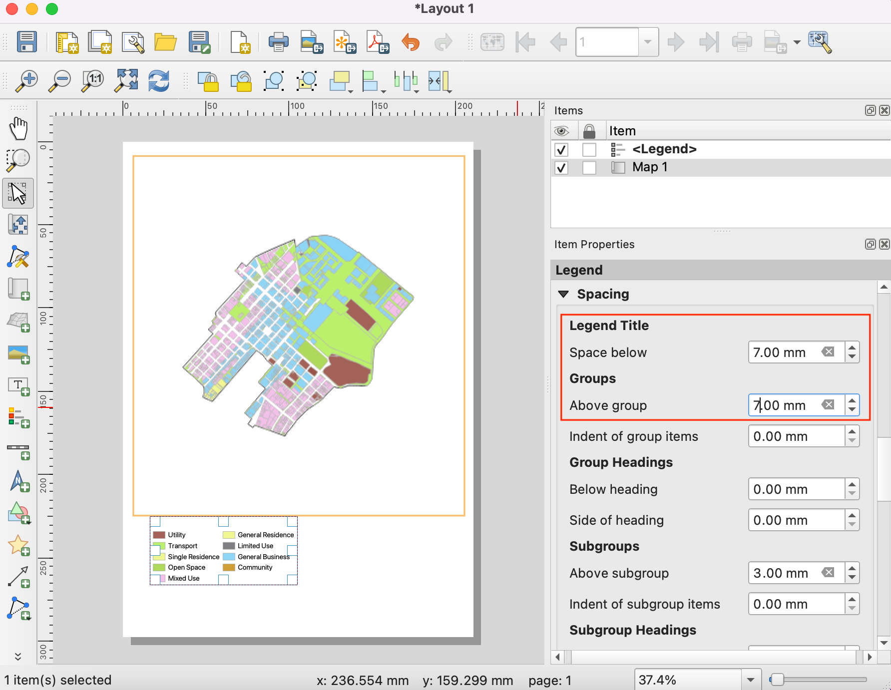

Ujaval Gandhi
Ujaval GandhiCreación de un mapa de uso de la tierra (QGIS3)¶
Las designaciones de zonificación definen y regulan qué tipos de usos están permitidos en parcelas específicas y esbozan los requisitos y directrices de diseño y desarrollo. En este tutorial aprenderá a acceder a conjuntos de datos de parcelas, a aplicarles estilos según los atributos de zonificación y a crear un mapa.
Visión general de la tarea¶
Trabajará con un conjunto de datos de parcelas con información de zonificación y creará un mapa que muestre el patrón de zonificación en la región del CBD de Ciudad del Cabo.

Otras competencias que aprenderá¶
Cómo acceder y descargar datos de ArcGIS REST en QGIS.
Cómo extraer objetos espaciales de una capa que intersecta una capa límite.
Cómo fusionar diferentes subcategorías desde el renderizador Categorizado.
Obtener los datos¶
Puede encontrar los datos para el tutorial en el Portal de Datos Abiertos de Ciudad del Cabo - https://odp-cctegis.opendata.arcgis.com. Vamos a importar datos desde el portal utilizando ArcGIS REST URL del servidor y se preparará tres capas se mencionan a continuación .
Capa de zonificación: Un archivo shape de polígonos con el código de zonificación y la descripción de las parcelas que tienen una única zonificación - recortada en el área del CBD de Ciudad del Cabo.
Capa de zonificación dividida: Un archivo shape de polígonos con el código de zonificación y la descripción de las parcelas con zonificación múltiple, con cada polígono dividido en polígonos de zonas individuales.
Área CDB de Ciudad del Cabo: Un polígono que delimita la zona del CDB de Ciudad del Cabo.
Veamos paso a paso cómo preparar el conjunto de datos para este tutorial.
Vaya al portal de datos - https://odp-cctegis.opendata.arcgis.com/. Buscaremos los datos del CBD de Ciudad del Cabo en la barra de búsqueda y haremos clic para seguir navegando.

Haga clic en Ver todos los detalles para explorar los servicios disponibles para obtener los datos.

Desplácese hacia abajo hasta encontrar Ver fuente de datos y haga clic en él.

En el Directorio de Servicios REST de ArcGIS, vaya a :guilabel: Inicio y copie la URL de esa página. La URL copiada tiene el siguiente aspecto - https://citymaps.capetown.gov.za/agsext1/rest/services.
Ahora, abra QGIS y vaya a :menuselection: Abrir Gestor de Fuentes de Datos.

La lista de fuentes de datos se ve en el panel izquierdo. Desplácese hacia abajo hasta encontrar . Haga clic en nuevo para crear una nueva conexión al servidor.

En Detalles de conexión, indique el Nombre
Cape Town Open Data Portaly pegue la url copiada como entrada para URL.
Haga clic en :guilabel: Aceptar y luego en :guilabel: Conectar para ver las carpetas de datos disponibles en el servidor.

Ahora buscaremos en la base de datos las tres capas necesarias para el tutorial. En primer lugar, abriremos la capa
Cape Town CBDen QGIS. Despliegue las carpetas para buscar las capas. La ruta completa a la capa es . Seleccione la capa y haga clic en :guilabel: Añadir.
Cierre :menuselection: Gestor de fuentes de datos para ver la capa añadida al QGIS. Haga clic en :menuselection: Zoom a Capa para centrar y mostrar la capa en el lienzo.

Ahora, añadiremos la capa
Zoningusando Gestor de Fuentes de Datos. Conéctese al «Portal de Datos Abiertos de Ciudad del Cabo» y busque la capaZoning. La ruta completa es . Esta es una capa muy grande, así que asegúrese de marcar la casilla Only request features overlapping the current view extent para evitar cargar todas las prestaciones disponibles en la capa. Si olvida esto, la carga de la capa puede tardar mucho tiempo. Haga clic en Add para abrir en QGIS.
Del mismo modo añadir
Split_Zoningcapa. La ruta completa es - .
Podemos ver que las tres capas de origen están abiertas en QGIS. Queremos recortar las capas
ZoningySplit Zoninga la capa límiteCape Town CBD. En primer lugar, vamos a guardar las tres capas localmente como archivos shape. Haga clic con el botón derecho en la capaCape Town CBD. Busque Exportar y haga clic en :guilabel: Guardar objetos espaciales como.
Establezca el formato ESRI Shapefile y vaya a la carpeta local donde desea guardar los archivos shape. Guardaremos todas las capas relacionadas con este tutorial en una única carpeta de datos. Guarde la capa como
cbd. Mantenga el resto de opciones por defecto y haga clic en Aceptar. Del mismo modo exportar otras dos capas comoZoning.shpySplit Zoninga la misma carpeta.
Elimine las capas cargadas desde el servidor. Seleccione las tres capas, y haga clic en :guilabel: Quitar Capa / Grupo icono. Queremos extraer los objetos espaciales de las capas
ZoningySplit Zoningque se cruzan con el límitecbd.
Vaya a de la barra de menús.

En la caja de herramientas, busque el algoritmo :guilabel: Intersección y haga doble clic para abrirlo.

Seleccione
Zoningcomo Capa de entrada ycbdcomo Capa de superposición. Mantenga las demás opciones por defecto y proceda a guardar el resultado en un archivo.
Guarde la capa de salida como
zoning_cbden la carpeta de datos y haga clic en Ejecutar.
Dependiendo de la configuración de Procesos, verá algunos errores o advertencias en la pestaña Registro. La capa de entrada tiene algunas geometrías inválidas y está siendo omitida mientras se ejecuta la intersección. Corregiremos las geometrías de las capas
ZoningySplit Zoningantes de ejecutar la intersección para extraer todas las geometrías.
Elimine la salida de intersección de QGIS y de la carpeta de datos. Busque la herramienta en la caja de herramientas de procesamiento. Haga doble clic para abrir.

Seleccione
Zoningcomo Capa de entrada. Mantenga el resto de entradas por defecto y guarde la capa de salida comozoning_fixed.shpen la carpeta de datos haciendo clic en Guardar en archivo. Haga clic en Ejecutar. Repita el proceso para fijar las geometrías en la capaSplit Zoningy guarde la capa con geometrías fijas comosplit_zoning_fixed.shp.
Eliminar
ZoningySplit Zoningcapas. Vamos a seguir adelante con la extracción de objetos espaciales dezoning_fixedysplit_zoning_fixedcapas que se cruzancbd. Busque en la caja de herramientas de procesado y haga doble clic para abrirla.
24.Seleccione Zoning_fixed como Capa de entrada y cbd como Capa de superposición` para realizar la intersección como se describe en los pasos 18 y 19. Guarde la salida como zoning_cbd y repita lo mismo para la capa split_zoning_fixed y guarde la capa de salida como split_zoning_cbd. Guarde la salida como zoning_cbd y repita lo mismo para la capa split_zoning_fixed y guarde la capa de salida como split_zoning_cbd.

Para mayor comodidad, puede descargar directamente una copia de las tres capas preprocesadas desde los siguientes enlaces:
Procedimiento¶
Abra QGIS. Haga clic en el icono para añadir capas con las que trabajar en el tutorial.

Cambie a la pestaña Vector y utilice el botón de navegación para ir a la carpeta donde ha guardado los archivos shape procesados.

Seleccione los archivos
cbd.shp,zoning_cbd.shpysplit_zoning_cbd.shpy haga clic en :guilabel: Abrir`.

Verá las tres rutas de archivo en el cuadro de texto junto a Vector Dataset. Haga clic en Añadir y luego en Cerrar.

Mientras trabajamos en el ejercicio, es importante guardar nuestro trabajo. Vaya a :menuselección:`Proyecto --> Guardar`.

Guarde el proyecto en el directorio de datos como archivo landuse_map.qgz. El archivo de proyecto QGIS contiene referencias a las capas de datos y guarda estilos, plantillas de mapas, etc.

Seleccione la capa
zoning_cbdy haga clic en el botón Abrir tabla de atributos de la barra de herramientas :menuselection: Atributos. Observe que el atributoINT_ZONE_Ccontiene los códigos de zonificación eINT_ZONE_Dcontiene la descripción de la zonificación. Cierre la tabla de atributos.

Ahora vamos a dar estilo a la capa basándonos en estos atributos, para que las parcelas con los mismos códigos de zonificación tengan estilos del mismo color. Haga clic en el botón Abrir el panel Estilos de capa del panel Capas. Haga clic en el botón desplegable situado junto a Simbolo único.

Seleccione Categorizado como renderizador. Seleccione
INT_ZONE_Ccomo valor. Haga clic en Clasificar.
Verá aparecer una serie de símbolos. Hay un símbolo de color diferente asignado para cada código único de la capa.

Observe que cada categoría de zonificación tiene subcategorías. La categoría
General Business (GB)tiene otras subdivisiones comoGB1,GB2, etc. Para los fines de este mapa, podemos fusionar todas las subcategorías en una única categoría de nivel superior. Mantenga pulsada la tecla Mayús y seleccione todas las subcategorías. Haga clic con el botón derecho y seleccione Fusionar categorías.
Repita el proceso para las categorías
MUyTR. Una vez fusionadas, ahora podemos cambiar la etiqueta Leyenda para que sea más descriptiva. Haga clic en la etiqueta Leyenda para cambiar el nombre de una clase.
Introduzca las descripciones de cada categoría de zonificación basándose en los valores indicados en la columna
INR_ZONE_D. A medida que introduzca esas descripciones, verá que la leyenda de la capa en el panel Capas también se actualiza.
Ahora podemos actualizar los colores y la simbología de cada categoría. Haga clic en la Símbolo de una categoría.

Cambie el Color de relleno y el Color de trazo del símbolo al color que desee.

Repita el proceso para cada categoría. La última categoría es todos los demás valores. Esta categoría contiene todas las parcelas que tienen valores NULL. Esto se debe a que esas parcelas tienen múltiples categorías de zonificación asociadas y están representadas en la capa split_zoning_cbd.shp. No las necesitamos en esta capa. Selecciónela y haga clic en el icono - para eliminar esa categoría.

A continuación, seleccione la capa
cbd. Cambie el símbolo a Línea simple y aumente el :guilabel: Ancho de trazo.
La capa
split_zoning_cbd.shpcontiene todas las parcelas a las que les faltaban códigos de zonificación en la capa zoning_cbd. La tabla de atributos y los valores de las zonas desplit_zoning_cbdson los mismos que los de la capazoning_cbd. En lugar de configurar manualmente la simbología para esta capa, podemos copiar/pegar los estilos. Seleccione la capa zoning_cbd, haga clic con el botón derecho y seleccione .
Ahora seleccione la capa
split_zoning_cbdrecién añadida, haga clic con el botón derecho y seleccione .
Verá que se aplica la misma simbología a los polígonos de la capa
split_zoning_cbd. La simbología y la leyenda ya están completas.
Ya tenemos nuestras capas estilizadas y las etiquetas de leyenda creadas. Ahora vamos a crear un mapa utilizando estas capas estilizadas junto con elementos de mapa como, barra de escala, flecha norte, etiquetas, etc. QGIS viene con una Composición de impresión que permite componer mapas. Vaya a . Cuando se le pida un nombre, puede dejarlo en blanco y pulsar Aceptar.

En la ventana Composición de impresión, verá un lienzo. Haga clic con el botón derecho y seleccione Propiedades de página.

Ajuste la Orientación a
Retrato. A continuación, vaya a .
Mantenga pulsado el botón izquierdo del ratón y dibuje un rectángulo en el lienzo. Este es el marco del mapa que contendrá el mapa de la ventana principal de QGIS. En la pestaña Propiedades del elemento, utilice el icono Edición interactiva de la extensión del mapa para desplazar o ampliar el contenido del marco del mapa.

Desplácese hacia abajo en la pestaña Propiedades del elemento y marque la opción Marco. Despliéguela y seleccione un Color para el borde del marco. También puede aumentar el Grosor.

El marco del mapa ya está listo. Vamos a añadir otros elementos. Vaya a .
Arrastre un rectángulo donde desee colocar la leyenda. Una vez añadida, desplácese hacia abajo en la pestaña Propiedades del elemento y desactive el botón Actualización automática para poder editar manualmente los elementos de la leyenda.

Tenemos 2 capas con leyendas idénticas, así que podemos eliminar una de ellas. Seleccione la capa
split_zoning_cbdy haga clic en el icono Quitar elemento(s) seleccionado(s) de la leyenda. Del mismo modo, elimine la capacbdde la leyenda.
Haga clic con el botón derecho en la capa
zoning_cbdy marque la opción Oculto.
Desplácese hacia abajo y expanda la sección Columnas. Marque la opción Dividir capas y aumente la Cantidad a 2.

Desplácese más abajo hasta la sección Espaciado. Ajuste el espaciado entre los distintos elementos hasta que la leyenda sea claramente legible.
Puede cambiar el estilo y tamaño de las fuentes en la leyenda desde las propiedades de Fuentes y Formato de Texto. Cuando haya terminado, vaya a . Arrastre un rectángulo donde desee colocar el elemento en el mapa.

Elija el símbolo que desee. Desplácese hacia abajo y despliegue Parámetros SVG. Cambie el Color de relleno y el Color de trazo según su elección.

Ahora añadiremos una Barra de Escala. Vaya a . Arrastre un rectángulo donde quiera colocar el elemento en el mapa. Ajuste los parámetros Estilo y :guilabel: Segmentos para la barra de escala.

Nuestro mapa necesita un título y otras etiquetas de información. Vaya a .

Introduzca un título para el mapa en la sección Propiedades principales. Haga clic en el botón Fuente de la sección Apariencia para ajustar el tamaño y el estilo de la fuente.

Añade otras etiquetas que indiquen la fuente de datos y su nombre. Por último terminaremos nuestro mapa añadiendo un marco alrededor del bloque de etiquetas. Vaya a .

Dibuje un rectángulo. Haga clic en el símbolo de Estilo y ajuste Color de relleno a transparente y Color de trazo para que coincida con otros marcos.
Una vez que esté satisfecho con su composición, puede exportar el resultado. Vaya a :menuselección:`Diseño --> Exportar como PDF`. Guarde el PDF en su carpeta de datos como
capetown_zoning_map.pdf.
If you want to give feedback or share your experience with this tutorial, please comment below. (requires GitHub account)